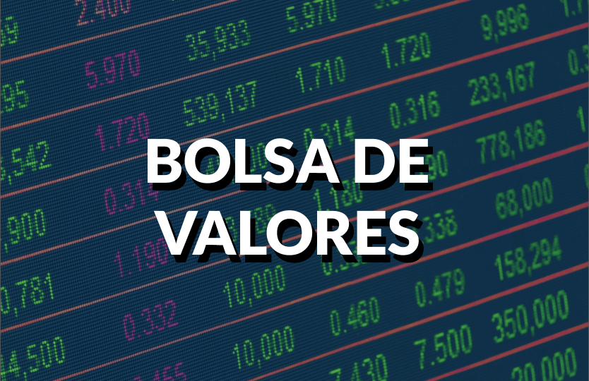
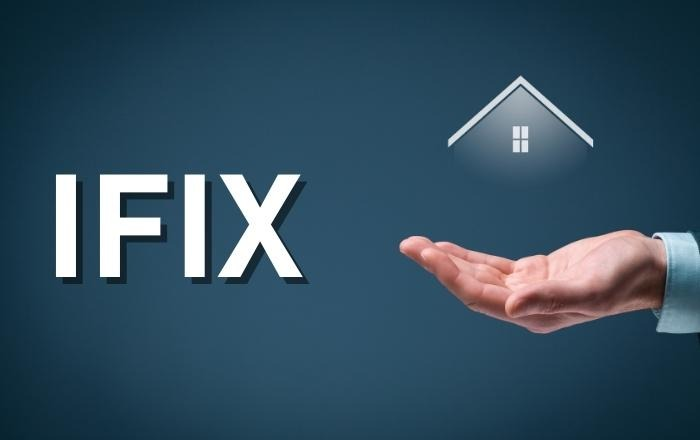

História
A história da bolsa de valores é um testemunho do desenvolvimento econômico e financeiro da humanidade. Desde os mercados rudimentares da antiguidade até as complexas transações digitais de hoje, as bolsas de valores evoluíram continuamente para atender às necessidades de um mundo em constante mudança. Compreender essa história nos ajuda a valorizar a importância dessas instituições na economia global (Pinheiro J., 2019).
A única bolsa de valores brasileira é a B3 que tem sede principal em São Paulo. Existem bolsas de valores em quase todos os países, já no Brasil, até meados de 1960, eram 27 bolsas de valores em todo país, porém por conta da crise econômica de 1970, durante o governo militar, essas bolsas começaram a perder espaço (B3., 2024).

IFIX
O IFIX são fundos imobiliários. Criado em 2012 pela B3 e tem como objetivo ser o indicador de desempenho das cotações em fundos imobiliários, tendo um índice de retorno total no qual se busca refletir
variações nos preços que o integram (Warren, 2023). Antigamente nossos avós queriam investir em imovéis, terrenos mas não sabiam como, e atualmente eles podem investir através do IFIX.
A bolsa possui uma metodologia específica para incluir ou excluir FIIs (Fundos de
Investimento Imobiliário) do IFIX, bem como ponderar o peso de cada fundo no cálculo geral.
Em resumo, as cotas de FIIs incluídas no IFIX são aquelas com volume e valor consideráveis, a
ponto de representarem uma parcela relevante do setor (B3, 2023).
